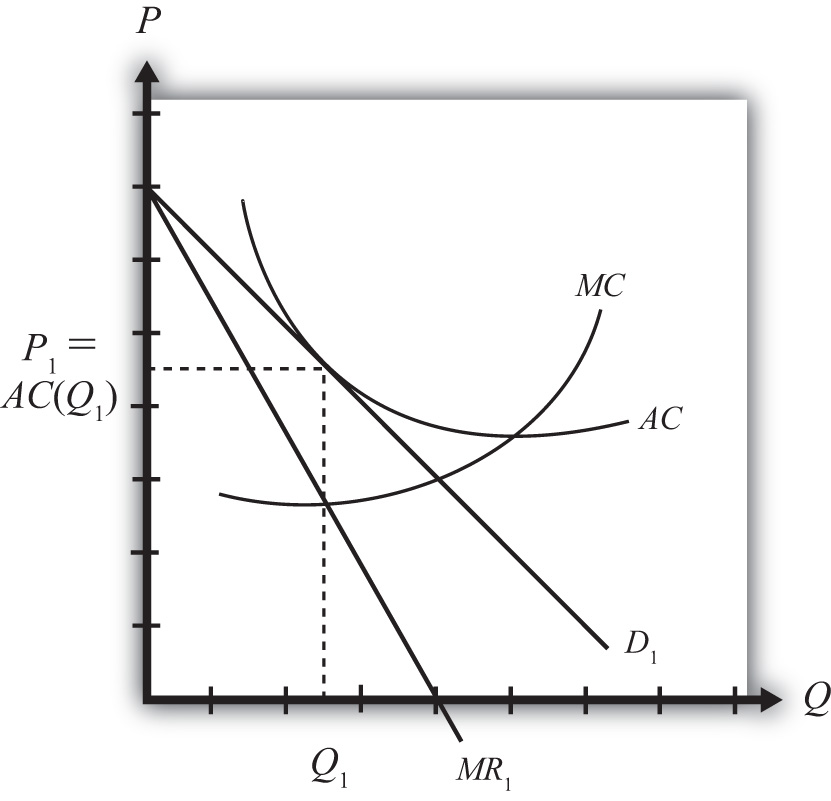

Assume that there are two countries, each with a monopolistically competitive industry producing a differentiated product. Suppose initially that the two countries are in autarky. For convenience, we will assume that the firms in the industry are symmetric relative to the other firms in the industry. Symmetry implies that each firm has the same average and marginal cost functions and that the demand curves for every firm’s product are identical, although we still imagine that each firm produces a product that is differentiated from all others. (Note that the assumptions about symmetry are made merely for tractability. It is much simpler to conceive of the model results when we assume that all firms are the same in their essential characteristics. However, it seems likely that these results would still be obtained even if firms were asymmetric.)
In Figure 6.4 "Firm Equilibrium in Monopolistic Competition", we depict a market equilibrium for a representative firm in the domestic industry. The firm faces a downward-sloping demand curve (D1) for its product and maximizes profit by choosing that quantity of output such that marginal revenue (MR1) is equal to marginal cost (MC). This occurs at output level Q1 for the representative firm. The firm chooses the price for its product, P1, that will clear the market. Notice that the average cost curve (AC) is just tangent to the demand curve at output Q1. This means that the unit cost at Q1 is equal to the price per unit—that is, P1 = AC(Q1), which implies that profit is zero. Thus the firm is in a long-run equilibrium since entry or exit has driven profits to zero.
Figure 6.4 Firm Equilibrium in Monopolistic Competition
Keep in mind that this is the equilibrium for just one of many similar firms producing in the industry. Also imagine that the foreign market (which is also closed to trade) has a collection of firms that are also in a long-run equilibrium initially.
Next, suppose whatever barriers to trade that had previously existed are suddenly and immediately removed—that is, suppose the countries move from autarky to free trade. The changes that ultimately arise will be initiated by the behavior of consumers in the market. Recall that market demand can be described using a love-of-variety approach or an ideal variety approach.
In the love-of-variety approach, the removal of trade barriers will increase the number of varieties consumers have to choose from. Since consumer welfare rises as the number of varieties increases, domestic consumers will shift some of their demand toward foreign varieties, while foreign consumers will shift some of their demand toward domestic varieties.
In the ideal variety approach, some domestic consumers will likely discover a more ideal variety produced by a foreign firm. Similarly, some foreign consumers will find a more ideal variety produced by a domestic firm.
In either case, domestic demand by domestic consumers will fall, while domestic demand by foreign consumers will rise. Similarly, foreign demand by foreign consumers will fall, while foreign demand by domestic consumers will rise. Note that this is true even if all the prices of all the goods in both countries are initially identical. In terms of Figure 6.4 "Firm Equilibrium in Monopolistic Competition", trade will cause the demand curve of a representative firm to shift out because of the increase in foreign demand but will cause the demand curve to shift back in because of the reduction in domestic demand. Since these two effects push the demand curve in opposite directions, the final effect will depend on the relative sizes of these effects.
Regardless of the size of these effects, the removal of trade barriers would cause intraindustry trade to arise. Each country would become an exporter and an importer of differentiated products that would be classified in the same industry. Thus the country would export and import automobiles, toothpaste, clothing, and so on. The main cause of this result is the assumption that consumers, in the aggregate at least, have a demand for variety.
However, two effects can be used to isolate the final equilibrium after trade is opened. First, the increase in the number of varieties available to consumers implies that each firm’s demand curve will become more elastic (or flatter). The reason is that consumers become more price sensitive. Since there are more varieties to choose from, a $1 increase in price of one variety will now lead more consumers to switch to an alternative brand (since there are more close substitutes available), and this will result in a larger decrease in demand for the original product. Second, free entry and exit of firms in response to profits will lead to a zero-profit equilibrium for all remaining firms in the industry.
Figure 6.5 Firm Equilibrium Before and After Trade

The final equilibrium for the representative firm is shown in Figure 6.5 "Firm Equilibrium Before and After Trade". Keep in mind that these same effects are occurring for every other firm in the industry, both domestically and in the foreign country. The demand curve shifts from D1 to D2 and the marginal revenue from MR1 to MR2 as a result of trade. The firm’s cost curves remain the same. Entry or exit of firms causes the final demand curve to be tangent to the firm’s average cost curve, but since the demand curve is more elastic (or flatter), the tangency occurs down and to the right of the autarky intersection. In the end, firm output rises from Q1 to Q2 and the price charged in the market falls from P1 to P2. Although individual firm output rises for each firm, we cannot tell in this model setup whether industry output has risen. In the adjustment to the long-run zero-profit equilibrium, entry (or more likely exit) of firms would occur. If some firms exit, then it remains uncertain whether fewer firms, each producing more output, would raise or lower industry output.
Jeopardy Questions. As in the popular television game show, you are given an answer to a question and you must respond with the question. For example, if the answer is “a tax on imports,” then the correct question is “What is a tariff?”